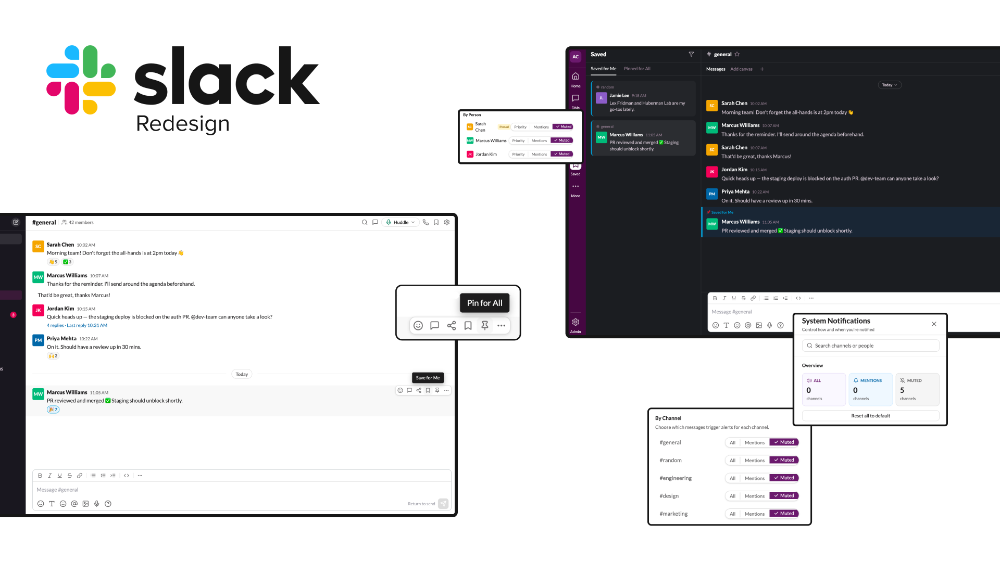
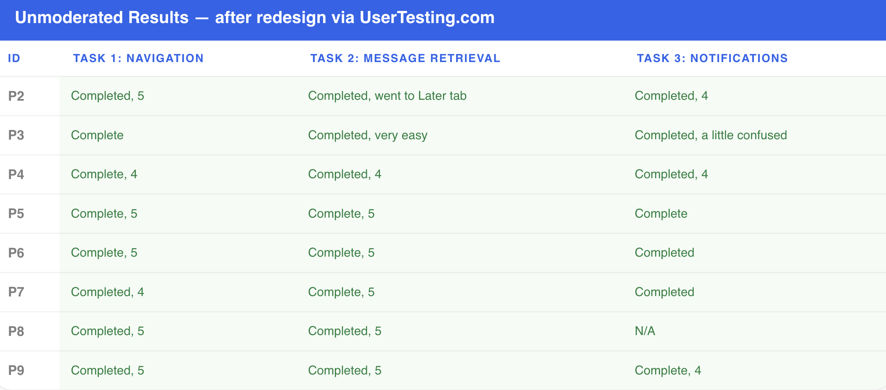

Visibility Breaks Down
Critical system state was hidden or absent at the moments users needed it most

Slack · UX Research · 2026
— The Project
Slack is one of the most widely used workplace communication tools, but many of its most important features are hidden behind unclear terminology, fragmented navigation, and invisible system states. This project evaluated Slack through heuristic analysis, moderated usability testing, redesign, and validation testing to uncover where users struggle and how targeted design changes could improve task success.
The Problem
When users need to find saved information, understand why they are receiving notifications, or navigate a new workspace, they often believe they completed tasks successfully when they actually failed. Slack frequently failed to communicate where information lived, what actions did, and whether a task was completed.
The result was false confidence, confusion, and wasted time. Users were finishing tasks wrong and had no idea.
Process
We followed a full research-to-validation loop. Heuristic findings shaped what we tested in moderated sessions. Moderated failures shaped what we redesigned. Redesigns were validated with a fresh cohort through UserTesting.com.
Reviewed 12 Slack workflows against Nielsen's 10 heuristics to identify usability issues before involving any participants
Defined test scenarios based on heuristic findings, then ran 8 participants through structured tasks on the current Slack interface with a facilitator present
Used moderated session failures to create targeted prototypes addressing the two highest-severity issues found in testing
Deployed redesigns to 8 new participants via UserTesting.com to confirm improvements held up without a facilitator present
Heuristic Evaluation
Before running any user tests, we evaluated 12 Slack workflows against Nielsen's 10 usability heuristics. Four themes emerged consistently across almost every workflow.
Critical system state was hidden or absent at the moments users needed it most
Actions completed without confirmation, leaving users uncertain whether anything happened
Related settings were split across multiple menus with no clear path between them
Simple tasks required more steps than expected, creating consistent drop-off patterns
This is a more dangerous failure mode than simple confusion. When the interface gives users false confidence, they stop looking for the right answer.
Moderated Testing
Eight participants completed three structured tasks with the original Slack interface. Task 1 passed. Tasks 2 and 3 revealed the core issues that would drive the redesign.

“Find where your team is communicating and introduce yourself.”
Users immediately understood Slack's channel structure and knew exactly where to go to introduce themselves to the team.
“Ohhh Slack. I feel comfy here.”
Navigation worked because it met expectations. Users recognized familiar patterns and completed the task without hesitation.
“Find the message your manager saved for you.”
Users could not distinguish between Saved, Pinned, and Later. The labels competed with each other and none clearly signaled where a manager's saved message would live.
“There is usually a saved button here. This is terribly confusing.”
Users understood saving as a concept, but Slack's implementation did not match their mental model—so most never found the message.
“Figure out why you are receiving notifications and update your settings.”
Notification settings were spread across at least three separate menus. Users could not determine what settings were active, why notifications appeared, or where the controls lived.
“I have no idea where to even start with this.”
Critical system state was hidden. Users needed to know what was happening before they could change it, and Slack never told them.
Designing Changes
Both redesigns targeted the same underlying problem: Slack was not communicating what it was doing. Click any image to expand it.
Redesign 01
We modified the UX writing of the pin and save options to use clearer, action-oriented language: Save for Me for personal content, and Pin for All for channel-wide visibility.
Before
After
Redesign 02
A persistent notification status bubble and centralized settings panel replaced three separate menus. Users can now see what is active and change it from one place.
Before
After
Unmoderated Validation
8 new participants tested the redesigned prototypes via UserTesting.com. The same tasks that produced major failures in the moderated session achieved 100% success.

37.5%
100%
Message retrieval success after redesign
25%
100%
Notification management success after redesign
Business Value
Slack is used hundreds of times per day. When core features are too confusing to use correctly, the cost is not one failed task in a lab. It is every employee, every day, slightly less productive than they should be.
When users can find information and trust system feedback, they spend less time searching and more time doing actual work.
Confused users become support tickets. Clear interfaces reduce the volume of questions that reach IT and operations teams.
Features users cannot find are features that do not exist for them. Better visibility drives genuine usage across the organization.
New team members get productive faster when the tool communicates clearly. Every week of confusion has a measurable cost.
Good communication tools should not make users guess. Visibility creates confidence, and confidence creates efficiency.
The Outcome
Before the redesigns, users regularly believed they completed tasks when they had not. After: users could locate saved information, understand notification settings, and complete tasks without confusion. Both severity-4 issues went from near-complete failure to 100% task success.
37.5%
100%
Message retrieval success
25%
100%
Notification management success
That's a wrap
If you have any questions about this project or want to connect, feel free to reach out.